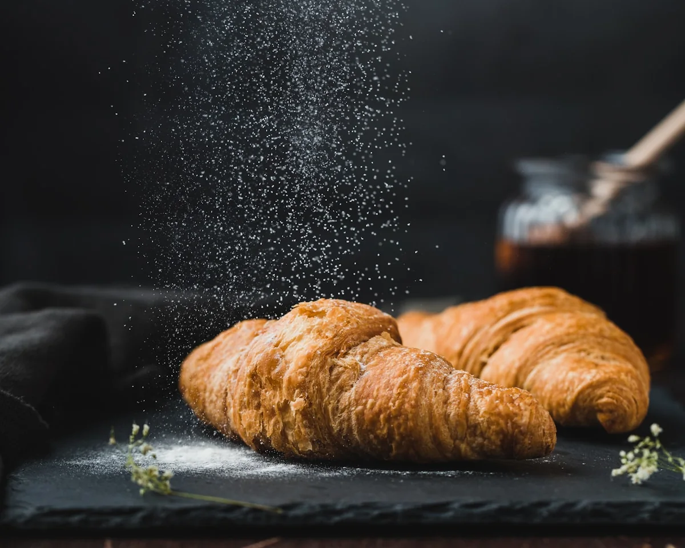

Helping bread & flour producers build better products, faster.
KIDEX DOOEL provides consulting services across wheat and flour processing, bakery products, confectionery and pasta technology, backed by 25 years of practical experience.

An experienced consulting partner for food technology.
KIDEX DOOEL brings 25 years of practical experience in wheat and flour processing, bakery products, confectionery and pasta technology.
With successful projects in North Macedonia and across the region, KIDEX works alongside producers to improve products, processes and practical results.
More about KIDEXClose to the product. Connected to what comes next.
From the ingredient and the production line to the digital tools around the business, KIDEX keeps practical results at the center.

Expertise from grain to finished product.
Bread & Flour Product Optimization
Refine what's already workingFine-tuning ingredients, processes and recipes to lift the quality, taste and nutritional value of the finished baked goods — without losing what already works on the line.
Explore this serviceNew Product Development
Build what's nextCreating and launching new products designed around real market demand and consumer needs — from early concept through to a formulation ready for production.
Explore this serviceLaboratory Equipment
Measure with confidenceLaboratory equipment expertise for quality control, expert analysis and selecting the right tools for wheat, flour, bakery, confectionery and pasta products.
Explore this serviceInnovation, consulting and solutions — treated as one continuous process, not three departments.
Every engagement moves from understanding a product's current performance, through hands-on advisory, to a concrete recipe, process or launch plan a producer can put on the line.
Innovation
Looking at ingredients, processes and formats with fresh eyes, grounded in how the products actually get made.
Consulting
Working directly alongside a producer's team rather than handing over a report and stepping away.
Solutions
Ending with something usable — a refined recipe, a new formulation, a clearer process.
KIDEX works close to the ingredient — the grain, the flour, the dough — because that's where quality and taste are actually decided.